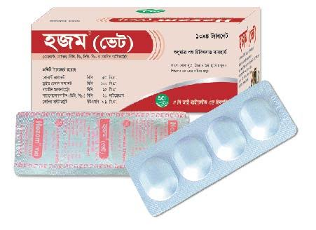

Composition
Each bolus contains
Cobalt Sulphate (as Heptahydrate) Bp 100 mg
Dried Ferrous Sulphate BP 200 mg
Thiamine Mononitrate (Vit. B1) BP 50 mg
Cyanocobalamin (Vit. B12) BP 40 mcg
CHoline Bitartrate USP 18.2 mg
Indications
Hozom DS (vet) bolus contains Cobalt Sulphate, a vital ingredient and ensures normal functioning of the rumen microflora
Hozom DS (vet) bolus contains Ferrous Sulphate, an excellent adjuvant for prompt and reliable result required for haemopoiesis
Hozom DS (vet) bolus contains Ferrous Sulphate, an excellent adjuvant for prompt and reliable result required for haemopoiesis
Hozom DS (vet) bolus contains Vit. B12 required for tissue metabolism
Hozom DS (Vet) bolus contains Choline Bitartrate to stimulate the liver function.
Dosage & Administration
Hozom DS (vet) bolus for oral administration. 1 bolus per adult cattle per day for 2-3 consecutive days. Dosage may be increased in case of cross-bred cattle and buffaloes.
or As directed by the registered veterinarian.
Storage
Store in a cool & dry place, protect from light. Keep out of the reach of children.
Pack size
Each box contains 10 x 4 boluses in blister.